Thao tác cơ bản với tệp tin và thư mục
Thiết lập cấu trúc thư mục học tập tối ưu và áp dụng quy tắc đặt tên khoa học để lưu trữ dữ liệu nghiên cứu Sinh học và AI.
Sinh viên: Phạm Đình Khánh Đoan
|
MSV: 25001395
|
Khoa Sinh học - HUS-VNU
Mục tiêu bài học
- Hiểu rõ nguyên lý tổ chức dữ liệu cá nhân phục vụ học tập lâu dài.
- Áp dụng quy tắc đặt tên CamelCase hoặc SnakeCase kết hợp mốc thời gian để tránh thất lạc tài liệu thí nghiệm.
- Quản lý phiên bản khoa học đối với các tài liệu nghiên cứu Sinh học và mã nguồn phân tích.
Tóm tắt thực hiện
Tôi đã xây dựng cây thư mục phục vụ cho học kỳ này. Hệ thống phân cấp rõ ràng từ thư mục gốc của môn học đến các bài tập thực hành, tài liệu tham khảo và báo cáo.
Thực hiện
- Mở File Explorer: Nhấn tổ hợp phím Windows + E hoặc nhấp vào biểu tượng thư mục màu vàng trên thanh tác vụ.
- Truy cập ổ đĩa/thư mục: Ở cột bên trái, nhấp vào This PC, sau đó nhấp đúp vào một ổ đĩa không phải ổ hệ thống (ví dụ: ổ D: hoặc E:). Nếu chỉ có ổ C:, hãy vào thư mục Documents.
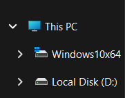
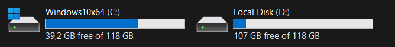
- Tạo thư mục mới: Nhấp chuột phải vào một khoảng trống -> chọn New -> Folder. Đặt tên thư mục là ThucHanh_hotensinhvien (ví dụ: ThucHanh_PhamDinhKhanhDoan). Nhấn Enter.
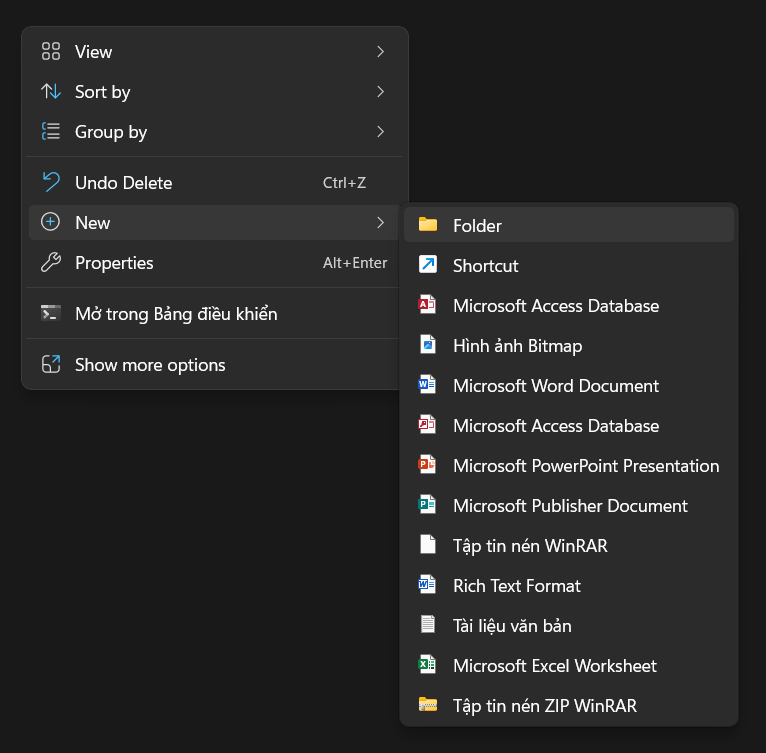
- Vào thư mục vừa tạo: Nhấp đúp vào thư mục ThucHanh_NguyenVanA.
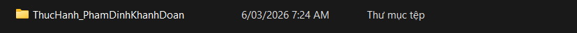
- Tạo tệp tin văn bản: Nhấp chuột phải vào khoảng trống -> New -> Text Document. Đặt tên là GhiChu.txt. Nhấn Enter.
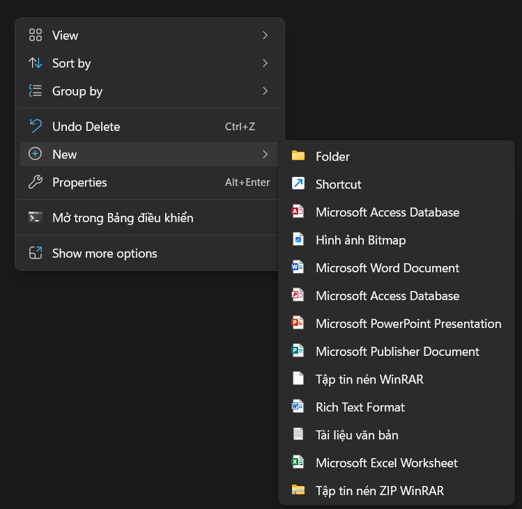
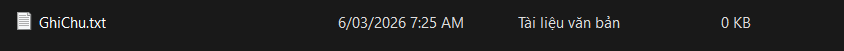
- Đổi tên tệp tin: Nhấp chuột phải vào tệp GhiChu.txt -> chọn Rename. Đổi tên thành GhiChuQuanTrong.txt. Nhấn Enter.
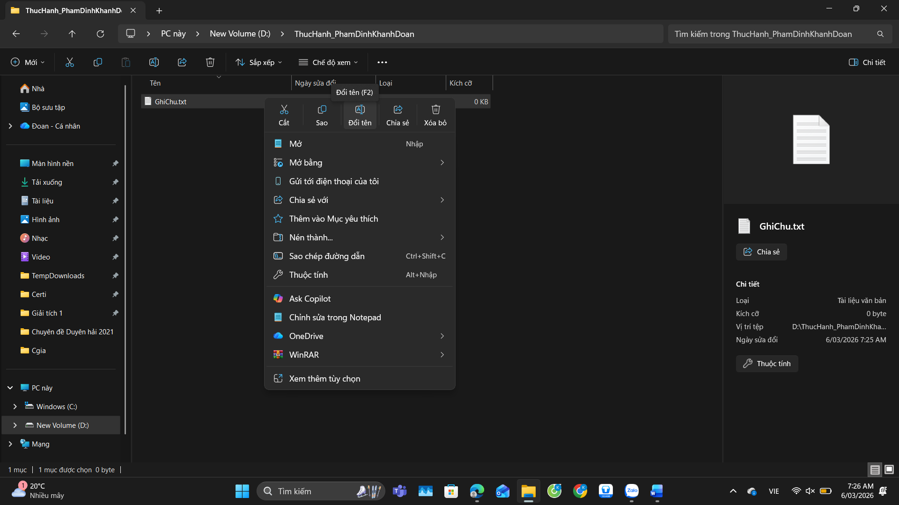
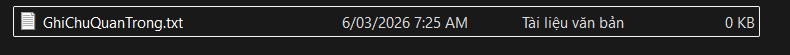
- Tạo thư mục con: Trong thư mục ThucHanh_PhamDinhKhanhDoan, nhấp chuột phải -> New -> Folder. Đặt tên là TaiLieu.
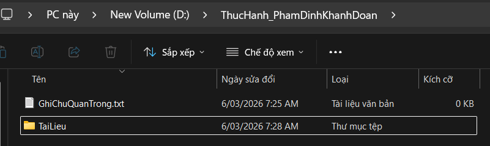
8. Sao chép tệp tin (Copy & Paste):
- Nhấp chuột phải vào tệp GhiChuQuanTrong.txt -> chọn Copy (hoặc chọn tệp rồi nhấn Ctrl + C).
- Nhấp đúp vào thư mục TaiLieu, nhấp chuột phải vào khoảng trống bên trong -> chọn Paste (hoặc nhấn Ctrl + V). Bây giờ bạn có một bản sao của tệp trong thư mục TaiLieu.
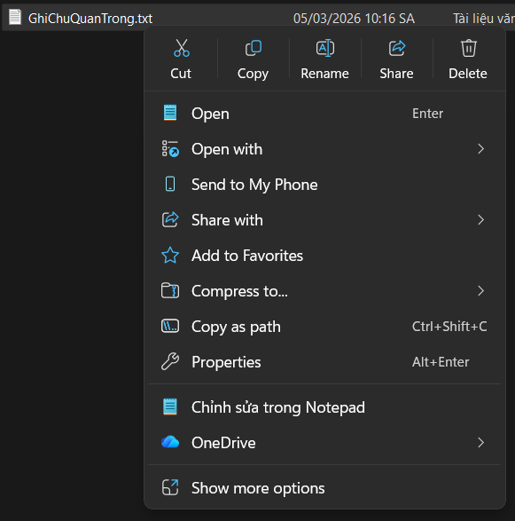
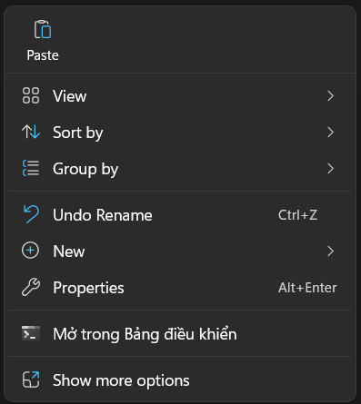
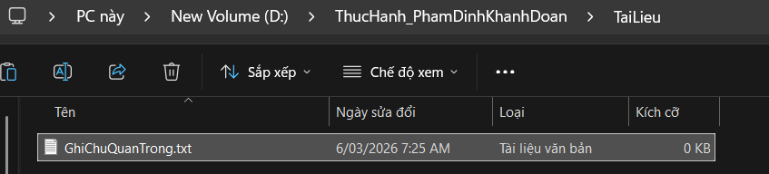
9. Di chuyển tệp tin (Cut & Paste):
- Quay lại thư mục ThucHanh_PhamDinhKhanhDoan. Tạo một tệp mới tên là DiChuyen.txt.
- Nhấp chuột phải vào tệp DiChuyen.txt -> chọn Cut (hoặc chọn tệp rồi nhấn Ctrl + X).
- Nhấp đúp vào thư mục TaiLieu, nhấp chuột phải vào khoảng trống -> chọn Paste (hoặc nhấn Ctrl + V). Tệp gốc đã biến mất khỏi vị trí cũ và chỉ còn ở vị trí mới.
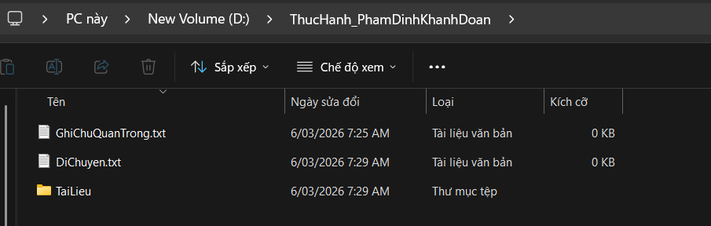
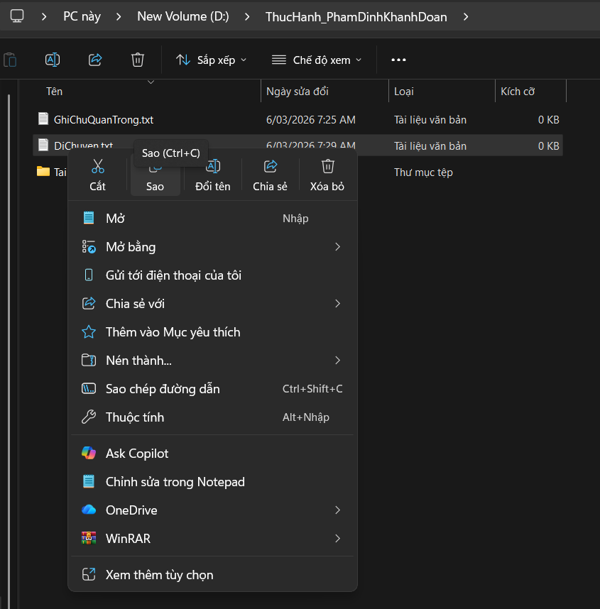
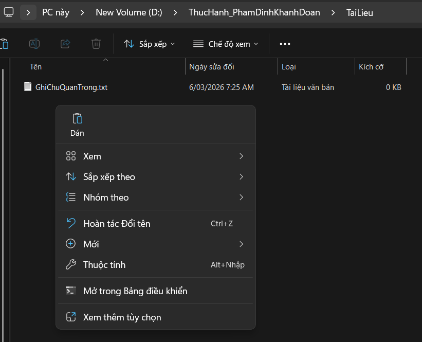
Sau khi thưc hiện xong:
- Thư mục ThucHanh_PhamDinhKhanhDoan:
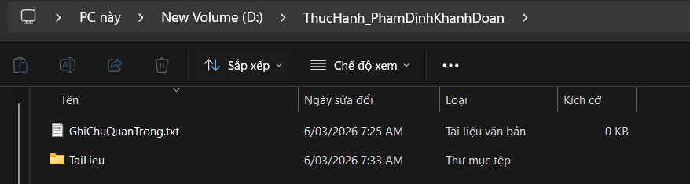
- Thư mục TaiLieu:
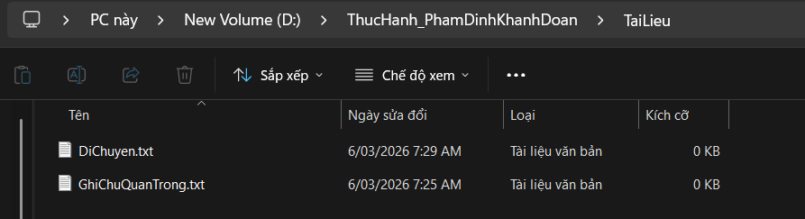
10. Xóa tệp tin: Trong thư mục TaiLieu, nhấp chuột phải vào tệp GhiChuQuanTrong.txt -> chọn Delete. Tệp sẽ được chuyển vào Thùng rác (Recycle Bin).
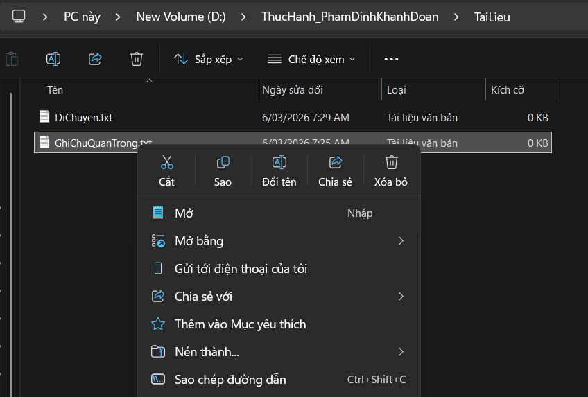
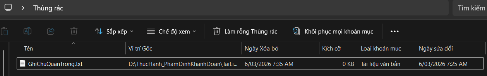
11. Xóa vĩnh viễn: Chọn tệp DiChuyen.txt, nhấn giữ phím Shift và nhấn phím Delete. Một cảnh báo sẽ hiện ra. Nếu đồng ý, tệp sẽ bị xóa vĩnh viễn mà không qua Thùng rác.
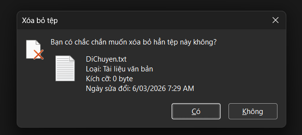
Sau khi nhấn “Có”, ta không thấy DiChuyen.txt trong Thùng rác
12. Khôi phục từ Thùng rác (Tùy chọn): Tìm biểu tượng Recycle Bin trên màn hình nền, nhấp đúp để mở. Tìm tệp GhiChuQuanTrong.txt đã xóa, nhấp chuột phải vào nó và chọn Restore. Tệp sẽ quay trở lại vị trí ban đầu.
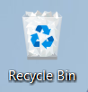
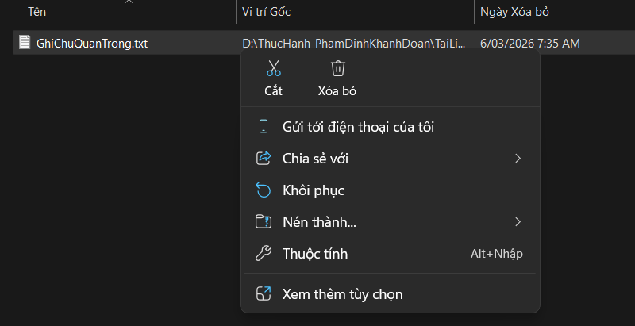
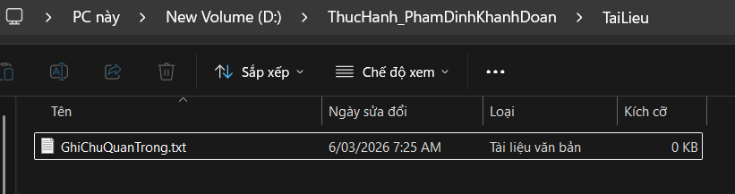